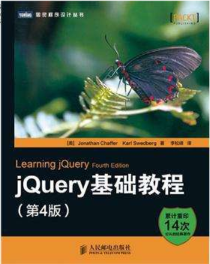
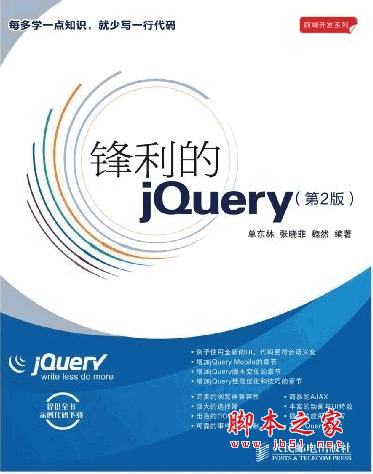

<!DOCTYPE html><html><head><meta charset="utf-8"><title>资料 | 技术学派</title><meta name="viewport" content="width=device-width,initial-scale=1,maximum-scale=1"><meta name="keywords" content="IT培训, Python, 大数据, 人工智能, Web前端, PHP, "><meta name="description" content="技术学派专注于个性化IT培训,Python、人工智能、大数据、Web 前端、PHP、区块链，一个导师只带7位学员，我们是高端IT教育私塾！"><meta property="og:type" content="website"><meta property="og:title" content="资料"><meta property="og:url" content="http://www.JiShuXuePai.com/tech/jquery/relative.html"><meta property="og:site_name" content="技术学派"><meta property="og:description" content="技术学派专注于个性化IT培训,Python、人工智能、大数据、Web 前端、PHP、区块链，一个导师只带7位学员，我们是高端IT教育私塾！"><meta property="og:locale" content="zh-CN"><meta property="og:updated_time" content="2018-05-11T08:14:17.696Z"><meta name="twitter:card" content="summary"><meta name="twitter:title" content="资料"><meta name="twitter:description" content="技术学派专注于个性化IT培训,Python、人工智能、大数据、Web 前端、PHP、区块链，一个导师只带7位学员，我们是高端IT教育私塾！"><link rel="stylesheet" href="/libs/bootstrap/bootstrap-grid.css"><link rel="stylesheet" href="/libs/font-awesome/css/font-awesome.min.css"><link rel="stylesheet" href="/libs/titillium-web/styles.css"><link rel="stylesheet" href="/libs/source-code-pro/styles.css"><link rel="stylesheet" href="/css/style.css"><script src="/libs/jquery/jquery.min.js"></script><link rel="stylesheet" href="/libs/lightgallery/css/lightgallery.min.css"><link rel="stylesheet" href="/libs/justified-gallery/justifiedGallery.min.css"><script>var _hmt=_hmt||[];!function(){var e=document.createElement("script");e.src="//hm.baidu.com/hm.js?4c1bd812de3c30edbaa2b803c66f0a04";var t=document.getElementsByTagName("script")[0];t.parentNode.insertBefore(e,t)}()</script></head></html><body><div id="wrap"><header id="header"><div id="header-outer" class="outer"><div class="container"><div class="container-inner"><div id="header-title"><h1 class="logo-wrap"><a href="/" class="logo"></a></h1></div><div id="header-inner" class="nav-container"><a id="main-nav-toggle" class="nav-icon fa fa-bars">菜单</a><div class="nav-container-inner"><ul id="main-nav"><li class="main-nav-list-item"><a class="main-nav-list-link" href="/">主页</a></li><li class="main-nav-list-item"><a class="main-nav-list-link" href="/edu/index.html">学编程</a></li><li class="main-nav-list-item"><a class="main-nav-list-link" href="/blog/">博客</a></li><li class="main-nav-list-item"><a class="main-nav-list-link" href="/nav.html">网站导航</a></li><li class="main-nav-list-item"><a class="main-nav-list-link" href="/tips.html">学习建议</a></li><li class="main-nav-list-item"><a class="main-nav-list-link" href="/about.html">关于</a></li></ul><nav id="sub-nav"><div id="search-form-wrap"><form class="search-form"><input type="text" class="ins-search-input search-form-input" placeholder="搜索"> <button type="submit" class="search-form-submit"></button></form><div class="ins-search"><div class="ins-search-mask"></div><div class="ins-search-container"><div class="ins-input-wrapper"><input type="text" class="ins-search-input" placeholder="想要查找什么..."> <span class="ins-close ins-selectable"><i class="fa fa-times-circle"></i></span></div><div class="ins-section-wrapper"><div class="ins-section-container"></div></div></div></div><script>window.INSIGHT_CONFIG={TRANSLATION:{POSTS:"文章",PAGES:"页面",CATEGORIES:"分类",TAGS:"标签",UNTITLED:"(未命名)"},ROOT_URL:"/",CONTENT_URL:"/content.json"}</script><script src="/js/insight.js"></script></div></nav></div></div></div></div></div></header><div class="container"><div class="main-body container-inner"><div class="main-body-inner"><section id="main"><div class="main-body-header"><h1 class="header"><em class="page-title-link" data-url="/tech/jquery/relative.html">资料</em><div class="author">果志青</div></h1></div><div class="main-body-content"><link rel="stylesheet" href="/css/tech/relative.css"><link rel="stylesheet" href="/css/tech/nav.css"><div class="article-single"><h1 class="title"><i class="icon fa fa-th-list"></i> 相关资料</h1><div class="row materials"><div class="col-md-4 col-sm-6"><div class="item"><a target="_blank" href="http://blog.csdn.net/qq_34477549/article/details/52821889"><div class="nav_logo"><h2><span title="jquery常用语法总结">jquery常用语法总结</span></h2></div><div class="desc" title="将工作中经常用到的jQuery语法进行总结。对于易混淆知识点做了对比分析">将工作中经常用到的jQuery语法进行总结。对于易混淆知识点做了对比分析</div></a></div></div><div class="col-md-4 col-sm-6"><div class="item"><a target="_blank" href="http://www.jb51.net/article/77272.htm"><div class="nav_logo"><h2><span title="jQuery语法小结(超实用)">jQuery语法小结(超实用)</span></h2></div><div class="desc" title="这篇文章主要介绍了jQuery语法小结(超实用)，涉及到jquery语法相关知识，对jquery语法相关知识感兴趣的朋友一起学习吧">这篇文章主要介绍了jQuery语法小结(超实用)，涉及到jquery语法相关知识，对jquery语法相关知识感兴趣的朋友一起学习吧</div></a></div></div><div class="col-md-4 col-sm-6"><div class="item"><a target="_blank" href="http://www.jb51.net/jiaoben/"><div class="nav_logo"><h2><span title="丰富的jQuery插件下载">丰富的jQuery插件下载</span></h2></div><div class="desc" title="脚本之家-- 丰富的jQuery插件下载，免费的！也能够找到很多基础知识的详细解释。">脚本之家-- 丰富的jQuery插件下载，免费的！也能够找到很多基础知识的详细解释。</div></a></div></div></div><h1 class="title"><i class="icon fa fa-th-list"></i> 相关书籍</h1><div class="row books"><div class="row"><dl class="col-2"></dl><dl class="col-10"><dt><h2>jQuery 1-3版本 API手册</h2></dt><dd title="jQuery 是一个高效、精简并且功能丰富的 JavaScript 工具库。它提供的 API 易于使用且兼容众多浏览器，这让诸如 HTML 文档遍历和操作、事件处理、动画和 Ajax操作更加简单。">jQuery 是一个高效、精简并且功能丰富的 JavaScript 工具库。它提供的 API 易于使用且兼容众多浏览器，这让诸如 HTML 文档遍历和操作、事件处理、动画和 Ajax操作更加简单。</dd><dd class="down_btn"><span class="left">下载密码:　zr3w</span> <a target="_blank" href="https://pan.baidu.com/s/1i6gGNqP" class="right"><i class="icon fa fa-book"></i> 下载试读</a><div class="clear"></div></dd></dl></div><div class="row"><dl class="col-2"></dl><dl class="col-10"><dt><h2>jQuery插件</h2></dt><dd title="工作中非常实用的jQuery插件，附带教程。轮播图插件，时间插件，弹出层插件，echarts插件。让你在调用时只需要用很少的代码就能实现很好的效果">工作中非常实用的jQuery插件，附带教程。轮播图插件，时间插件，弹出层插件，echarts插件。让你在调用时只需要用很少的代码就能实现很好的效果</dd><dd class="down_btn"><span class="left">下载密码:　brnk</span> <a target="_blank" href="https://pan.baidu.com/s/1o90Pyoq" class="right"><i class="icon fa fa-book"></i> 下载试读</a><div class="clear"></div></dd></dl></div><div class="row"><dl class="col-2"></dl><dl class="col-10"><dt><h2>jQuery基础教程（第四版）</h2></dt><dd title="《jQuery基础教程(第4版)》是jQuery经典技术教程的最新升级版，涵盖jQuery 1.10.x和jQuery 2.0.x。本书前6章以通俗易懂的方式讲解了jQuery的核心组件，包括jQuery的选择符、事件、动画、DOM操作、Ajax支持等。第7章和第8章介绍了jQuery UI、jQuery Mobile及利用jQuery强大的扩展能力开发自定义插件。随后的几章更加深入地探讨了jQuery的各种特性及一些高级技术。附录A特别讲解了JavaScript中闭包的概念，以及如何在jQuery中有效地使用闭包。附录B讲解了使用QUnit测试JavaScript代码的必备知识">《jQuery基础教程(第4版)》是jQuery经典技术教程的最新升级版，涵盖jQuery 1.10.x和jQuery 2.0.x。本书前6章以通俗易懂的方式讲解了jQuery的核心组件，包括jQuery的选择符、事件、动画、DOM操作、Ajax支持等。第7章和第8章介绍了jQuery UI、jQuery Mobile及利用jQuery强大的扩展能力开发自定义插件。随后的几章更加深入地探讨了jQuery的各种特性及一些高级技术。附录A特别讲解了JavaScript中闭包的概念，以及如何在jQuery中有效地使用闭包。附录B讲解了使用QUnit测试JavaScript代码的必备知识</dd><dd class="down_btn"><span class="left">下载密码:　bawy</span> <a target="_blank" href="https://pan.baidu.com/s/1kXaNsyV" class="right"><i class="icon fa fa-book"></i> 下载试读</a><div class="clear"></div></dd></dl></div><div class="row"><dl class="col-2"></dl><dl class="col-10"><dt><h2>锋利的jQuery （第二版）</h2></dt><dd title="本书循序渐进地对jQuery的各种函数和方法调用进行了介绍，读者可以系统地掌握jQuery的DOM操作、事件监听和动画、表单操作、AJAX以及插件方面等知识点，并结合每个章节后面的案例演示进行练习，达到掌握核心知识点的目的。 ">本书循序渐进地对jQuery的各种函数和方法调用进行了介绍，读者可以系统地掌握jQuery的DOM操作、事件监听和动画、表单操作、AJAX以及插件方面等知识点，并结合每个章节后面的案例演示进行练习，达到掌握核心知识点的目的。</dd><dd class="down_btn"><span class="left">下载密码:　4mvx</span> <a target="_blank" href="https://pan.baidu.com/s/1ggzHInT" class="right"><i class="icon fa fa-book"></i> 下载试读</a><div class="clear"></div></dd></dl></div></div></div></div></section><aside id="sidebar"><a class="sidebar-toggle" title="Expand Sidebar"><i class="toggle icon"></i></a><div class="sidebar-top"><p>关注我 :</p><ul class="social-links"><li><a class="social-tooltip" title="火星时代" href="http://edu.hxsd.com/edunew/topics/webfull/index.html" target="_blank"><i class="icon fa fa-dribbble"></i></a></li><li><a class="social-tooltip" title="weibo" href="#" target="_blank"><i class="icon fa fa-weibo"></i></a></li><li><a class="social-tooltip" title="rss" href="/atom.xml" target="_blank"><i class="icon fa fa-rss"></i></a></li></ul></div><div class="widgets-container"><link rel="stylesheet" href="/css/tech/technology.css"><div class="widget-wrap widget-list"><div class="widget"><dl class="technology"><dt></dt><dd><p>jQuery</p><div class="notes"><a href="/tech/jquery/notes.html">教学讲义</a></div><div class="row"><div class="col-4 change_blue"><a href="/tech/jquery/case.html">13<br>案例</a></div><div class="col-4 plan"><a href="##">10<br>核心知识</a></div><div class="col-4 plan"><a href="##">10<br>文章</a></div></div><div class="row"><div class="col-6 plan"><a href="##">教学计划</a></div><div class="col-6"><a href="/tech/jquery/relative.html">相关资料</a></div></div></dd></dl></div></div><link rel="stylesheet" href="/css/tech/toc.css"><div class="widget-wrap widget-list widget-toc"><h3 class="widget-title">目录</h3><div class="widget"><div class="toc"></div><link rel="stylesheet" href="https://cdnjs.cloudflare.com/ajax/libs/tocbot/3.0.5/tocbot.css"><script src="https://cdnjs.cloudflare.com/ajax/libs/tocbot/3.0.5/tocbot.min.js"></script><script>$(function(){$(".main-body-content").find("h1,h2,h3").each(function(t){$(this).attr("id")||$(this).attr("id","list"+t)}),tocbot.init({tocSelector:".toc",contentSelector:".main-body-content",headingSelector:"h1, h2, h3",collapseDepth:2,positionFixedSelector:".widget-toc",fixedSidebarOffset:595,includeHtml:!1})})</script></div></div><div class="widget-wrap widget-list"><h3 class="widget-title">链接</h3><div class="widget"><ul><li><a href="http://edu.hxsd.com/edunew/topics/webfull/index.html">火星时代</a></li></ul></div></div></div></aside><script>$(function(){$(window).scroll(function(){240<=$(document).scrollTop()?($("#sidebar .sidebar-toggle").addClass("fix"),"block"==$("#sidebar .sidebar-toggle").css("display")&&$(".is-position-fixed").css("top","35px")):$("#sidebar .sidebar-toggle").removeClass("fix")})})</script></div></div></div><footer id="footer"><div class="top"><div class="inner"><div class="list"><div class="left clearfix"><dl><dt>关于我们</dt><dd><a href="/about.html">公司简介</a></dd><dd><a href="edu/index.html">联系我们</a></dd></dl><dl><dt>校区攻略</dt><dd><a href="edu/index.html">校区环境</a></dd><dd><a href="edu/index.html">住宿攻略</a></dd><dd><a href="edu/index.html">来校路线</a></dd></dl><dl><dt>课程培训</dt><dd><a href="edu/python.html">Web前端</a></dd><dd><a href="edu/python.html">Python</a></dd><dd><a href="edu/python.html">人工智能</a></dd><dd><a href="edu/python.html">大数据</a></dd></dl><dl><dt>常见问答</dt><dd><a href="edu/index.html">学费学时</a></dd><dd><a href="edu/index.html">学习方法</a></dd></dl></div></div><div class="tel"><tel>176-0025-8815</tel><span>北京市海淀区杏石口路81号火星时代大厦</span></div><div class="weixin"><div class="w1"> <span>头条号</span></div><div class="w1"> <span>官方微信</span></div></div></div></div><div class="bot">Copyright 2018 技术学派 京ICP备15015508号-3</div></footer><link rel="stylesheet" href="https://unpkg.com/gitalk/dist/gitalk.css"><script src="https://unpkg.com/gitalk/dist/gitalk.min.js"></script><script>var gitalk=new Gitalk({clientID:"2fbbb9980b49019d99a7",clientSecret:"152dd10e83ef6595761ea2185304f9ac8263573f",repo:"jsxp",owner:"li-kang",admin:["li-kang"]});gitalk.render("gitalk_frame")</script><script src="/libs/lightgallery/js/lightgallery.min.js"></script><script src="/libs/lightgallery/js/lg-thumbnail.min.js"></script><script src="/libs/lightgallery/js/lg-pager.min.js"></script><script src="/libs/lightgallery/js/lg-autoplay.min.js"></script><script src="/libs/lightgallery/js/lg-fullscreen.min.js"></script><script src="/libs/lightgallery/js/lg-zoom.min.js"></script><script src="/libs/lightgallery/js/lg-hash.min.js"></script><script src="/libs/lightgallery/js/lg-share.min.js"></script><script src="/libs/lightgallery/js/lg-video.min.js"></script><script src="/libs/justified-gallery/jquery.justifiedGallery.min.js"></script><script src="/js/main.js"></script></div></body>